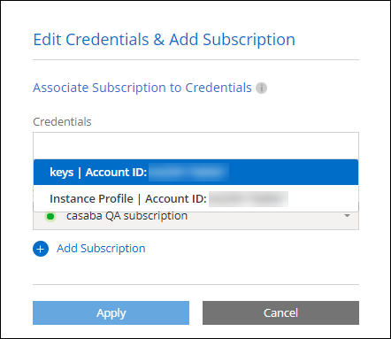

Dokumentationsänderungen beantragen
Dokumentationsänderungen beantragen In GitHub bearbeiten
In GitHub bearbeiten Leitfaden für Beitragende
Leitfaden für BeitragendeManagen Sie AWS Anmeldeinformationen und Abonnements für BlueXP
Beitragende
Fügen Sie AWS Anmeldedaten hinzu und managen Sie diese, damit BlueXP über die erforderlichen Berechtigungen verfügt, um Cloud-Ressourcen in Ihren AWS-Konten bereitzustellen und zu managen. Wenn Sie mehrere AWS-Abonnements verwalten, können Sie jedes davon auf der Seite „Anmeldeinformationen“ verschiedenen AWS Zugangsdaten zuweisen.
Überblick
AWS Zugangsdaten können zu einem vorhandenen Connector oder direkt zu BlueXP hinzugefügt werden:
-
Fügen Sie einem vorhandenen Connector zusätzliche AWS Zugangsdaten hinzu
Wenn Sie einem vorhandenen Connector AWS Zugangsdaten hinzufügen, erhalten Sie die erforderlichen Berechtigungen für das Management von Ressourcen und Prozessen in Ihrer Public-Cloud-Umgebung. credentials to a Connector,Erfahren Sie, wie Sie AWS Zugangsdaten zu einem Connector hinzufügen.
-
Fügen Sie zur Erstellung eines Connectors AWS Credentials zu BlueXP hinzu
Wenn Sie BlueXP neue AWS-Anmeldeinformationen hinzufügen, erhalten Sie mit BlueXP die erforderlichen Berechtigungen zum Erstellen eines Connectors. credentials to BlueXP for creating a Connector,Erfahren Sie, wie Sie AWS Zugangsdaten zu BlueXP hinzufügen.
-
Fügen Sie AWS Credentials zu BlueXP für FSX für ONTAP hinzu
Wenn Sie BlueXP neue AWS Zugangsdaten hinzufügen, erhalten Sie unter BlueXP die erforderlichen Berechtigungen zum Erstellen und Managen von FSX für ONTAP. "Erfahren Sie, wie Sie Berechtigungen für FSX für ONTAP einrichten"
So drehen Sie die Anmeldeinformationen
Mit BlueXP können Sie AWS Zugangsdaten auf verschiedene Arten bereitstellen: Eine mit der Connector-Instanz verknüpfte IAM-Rolle, eine IAM-Rolle in einem vertrauenswürdigen Konto oder AWS-Zugriffsschlüssel. "Weitere Informationen zu AWS Zugangsdaten und Berechtigungen".
Bei den ersten beiden Optionen verwendet BlueXP den AWS Security Token Service, um temporäre Anmeldedaten zu erhalten, die sich ständig drehen. Dieser Prozess ist die Best Practice, da er automatisch und sicher ist.
Wenn Sie BlueXP mit AWS-Zugriffsschlüsseln zur Verfügung stellen, sollten Sie die Schlüssel durch Aktualisierung in BlueXP in einem regelmäßigen Intervall drehen. Es handelt sich hierbei um einen vollständig manuellen Prozess.
Anmeldedaten zu einem Konnektor hinzufügen
Fügen Sie AWS Zugangsdaten zu einem Connector hinzu, damit die IT auch über die erforderlichen Berechtigungen zum Management von Ressourcen und Prozessen in Ihrer Public Cloud-Umgebung verfügt. Sie können entweder den ARN einer IAM-Rolle in einem anderen Konto bereitstellen oder AWS-Zugriffsschlüssel bereitstellen.
Berechtigungen erteilen
Bevor Sie AWS Zugangsdaten zu einem Connector hinzufügen, müssen Sie die erforderlichen Berechtigungen bereitstellen. Mithilfe der Berechtigungen kann BlueXP Ressourcen und Prozesse innerhalb dieses AWS Kontos verwalten. Wie Sie die Berechtigungen bereitstellen, hängt davon ab, ob Sie BlueXP mit dem ARN einer Rolle in einem vertrauenswürdigen Konto oder AWS Schlüsseln bereitstellen möchten.

|
Wenn Sie einen Connector von BlueXP bereitgestellt haben, hat BlueXP automatisch AWS-Anmeldeinformationen für das Konto hinzugefügt, in dem Sie den Connector bereitgestellt haben. Dieses Erstkonto wird nicht hinzugefügt, wenn Sie den Connector über den AWS Marketplace bereitgestellt haben oder wenn Sie die Connector-Software manuell auf einem vorhandenen System installieren. "Weitere Informationen zu AWS Zugangsdaten und Berechtigungen". |
Auswahl
-
permissions by assuming an IAM role in another account
-
permissions by providing AWS keys
Erteilen Sie Berechtigungen, indem Sie eine IAM-Rolle in einem anderen Konto übernehmen
Sie können eine Vertrauensbeziehung zwischen dem Quell-AWS-Konto einrichten, in dem Sie die Connector-Instanz und anderen AWS-Konten mithilfe von IAM-Rollen bereitgestellt haben. Dann würden Sie BlueXP über die vertrauenswürdigen Konten mit dem ARN der IAM-Rollen versorgen.
-
Rufen Sie die IAM-Konsole im Zielkonto auf, in dem Sie dem Connector Berechtigungen erteilen möchten.
-
Klicken Sie unter Zugriffsverwaltung auf Rollen > Rolle erstellen und befolgen Sie die Schritte zum Erstellen der Rolle.
Gehen Sie wie folgt vor:
-
Wählen Sie unter Vertrauenswürdiger Entitätstyp AWS-Konto aus.
-
Wählen Sie ein weiteres AWS-Konto aus, und geben Sie die ID des Kontos ein, auf dem sich die Connector-Instanz befindet.
-
Erstellen Sie die erforderlichen Richtlinien, indem Sie den Inhalt von kopieren und einfügen "Die IAM-Richtlinien für den Connector".
-
-
Kopieren Sie die Rolle ARN der IAM-Rolle, damit Sie sie später in BlueXP einfügen können.
Das Konto verfügt nun über die erforderlichen Berechtigungen. ,Sie können die Anmeldeinformationen jetzt einem Connector hinzufügen.
Erteilen Sie Berechtigungen durch die Bereitstellung von AWS Schlüsseln
Wenn Sie BlueXP für einen IAM-Benutzer AWS-Schlüssel bereitstellen möchten, müssen Sie diesem Benutzer die erforderlichen Berechtigungen erteilen. Die BlueXP IAM-Richtlinie definiert die AWS Aktionen und Ressourcen, die BlueXP verwenden darf.
-
Erstellen Sie Richtlinien von der IAM-Konsole aus, indem Sie die Inhalte von kopieren und einfügen "Die IAM-Richtlinien für den Connector".
-
Hängen Sie die Richtlinien an eine IAM-Rolle oder einen IAM-Benutzer an.
Das Konto verfügt nun über die erforderlichen Berechtigungen. ,Sie können die Anmeldeinformationen jetzt einem Connector hinzufügen.
Fügen Sie die Anmeldeinformationen hinzu
Nachdem Sie ein AWS Konto mit den erforderlichen Berechtigungen bereitgestellt haben, können Sie die Anmeldedaten für dieses Konto einem bestehenden Connector hinzufügen. Damit können Sie Cloud Volumes ONTAP-Systeme in diesem Konto mit demselben Connector starten.
Falls Sie diese Zugangsdaten gerade bei Ihrem Cloud-Provider erstellt haben, kann es einige Minuten dauern, bis sie zur Verwendung verfügbar sind. Warten Sie einige Minuten, bevor Sie BlueXP die Anmeldeinformationen hinzufügen.
-
Stellen Sie sicher, dass derzeit in BlueXP der richtige Connector ausgewählt ist.
-
Klicken Sie oben rechts in der BlueXP-Konsole auf das Symbol Einstellungen und wählen Sie Anmeldeinformationen.

-
Klicken Sie auf Anmeldeinformationen hinzufügen und befolgen Sie die Schritte im Assistenten.
-
Anmeldeort: Wählen Sie Amazon Web Services > Connector.
-
Identifizierungsdaten definieren: Geben Sie den ARN (Amazon Resource Name) einer vertrauenswürdigen IAM-Rolle an, oder geben Sie einen AWS-Zugriffsschlüssel und einen geheimen Schlüssel ein.
-
Marketplace-Abonnement: Verknüpfen Sie diese Anmeldedaten mit einem Marketplace-Abonnement, indem Sie jetzt abonnieren oder ein vorhandenes Abonnement auswählen.
Damit Cloud Volumes ONTAP mit stündlichem Tarif (PAYGO) oder mit einem Jahresvertrag bezahlt werden kann, müssen AWS Zugangsdaten über den AWS Marketplace mit einem Abonnement für Cloud Volumes ONTAP verknüpft werden.
-
Review: Bestätigen Sie die Angaben zu den neuen Anmeldedaten und klicken Sie auf Hinzufügen.
-
Sie können jetzt bei der Erstellung einer neuen Arbeitsumgebung auf eine andere Gruppe von Anmeldeinformationen von der Seite Details und Anmeldeinformationen wechseln:

Fügen Sie für die Erstellung eines Connectors Anmeldeinformationen zu BlueXP hinzu
Fügen Sie BlueXP die AWS Zugangsdaten hinzu, indem Sie das ARN einer IAM-Rolle bereitstellen, die BlueXP die zur Erstellung eines Connectors erforderlichen Berechtigungen erteilt. Sie können diese Anmeldeinformationen beim Erstellen eines neuen Connectors auswählen.
Einrichten der IAM-Rolle
Richten Sie eine IAM-Rolle ein, mit der BlueXP SaaS die Rolle übernehmen kann.
-
Wechseln Sie im Zielkonto zur IAM-Konsole.
-
Klicken Sie unter Zugriffsverwaltung auf Rollen > Rolle erstellen und befolgen Sie die Schritte zum Erstellen der Rolle.
Gehen Sie wie folgt vor:
-
Wählen Sie unter Vertrauenswürdiger Entitätstyp AWS-Konto aus.
-
Wählen Sie ein weiteres AWS-Konto und geben Sie die ID des BlueXP SaaS: 952013314444 ein
-
Erstellen Sie eine Richtlinie, die die zum Erstellen eines Connectors erforderlichen Berechtigungen enthält.
-
-
Kopieren Sie die Rolle ARN der IAM-Rolle, sodass Sie sie im nächsten Schritt in BlueXP einfügen können.
Die IAM-Rolle verfügt nun über die erforderlichen Berechtigungen. ,Sie können es jetzt zu BlueXP hinzufügen.
Fügen Sie die Anmeldeinformationen hinzu
Nachdem Sie die IAM-Rolle mit den erforderlichen Berechtigungen angegeben haben, fügen Sie die Rolle ARN zu BlueXP hinzu.
Wenn Sie gerade die IAM-Rolle erstellt haben, kann es ein paar Minuten dauern, bis sie zur Verwendung verfügbar sind. Warten Sie einige Minuten, bevor Sie BlueXP die Anmeldeinformationen hinzufügen.
-
Klicken Sie oben rechts in der BlueXP-Konsole auf das Symbol Einstellungen und wählen Sie Anmeldeinformationen.
-
Klicken Sie auf Anmeldeinformationen hinzufügen und befolgen Sie die Schritte im Assistenten.
-
Anmeldeort: Wählen Sie Amazon Web Services > BlueXP.
-
Anmeldedaten definieren: Geben Sie den ARN (Amazon Resource Name) der IAM-Rolle an.
-
Review: Bestätigen Sie die Angaben zu den neuen Anmeldedaten und klicken Sie auf Hinzufügen.
-
Sie können die Anmeldeinformationen jetzt beim Erstellen eines neuen Connectors verwenden.
AWS Abonnement zuordnen
Nachdem Sie Ihre AWS Zugangsdaten zu BlueXP hinzugefügt haben, können Sie ein AWS Marketplace Abonnement mit diesen Anmeldedaten verknüpfen. Mit dem Abonnement können Sie Cloud Volumes ONTAP auf Stundenbasis (PAYGO) oder bei Nutzung eines Jahresvertrags bezahlen und andere NetApp Cloud-Services nutzen.
Es gibt zwei Szenarien, in denen Sie ein AWS Marketplace-Abonnement verknüpfen können, nachdem Sie BlueXP bereits die Zugangsdaten hinzugefügt haben:
-
Sie haben ein Abonnement nicht zugeordnet, wenn Sie die Anmeldeinformationen zu BlueXP hinzugefügt haben.
-
Sie möchten ein vorhandenes AWS Marketplace Abonnement durch ein neues Abonnement ersetzen.
Sie müssen einen Konnektor erstellen, bevor Sie BlueXP-Einstellungen ändern können. "Erfahren Sie, wie Sie einen Konnektor erstellen".
-
Klicken Sie oben rechts in der BlueXP-Konsole auf das Symbol Einstellungen und wählen Sie Anmeldeinformationen.
-
Klicken Sie auf das Aktionsmenü für eine Reihe von Anmeldeinformationen und wählen Sie dann Abonnement verknüpfen.

-
Wählen Sie ein vorhandenes Abonnement aus der Down-Liste aus, oder klicken Sie auf Abonnement hinzufügen und befolgen Sie die Schritte, um ein neues Abonnement zu erstellen.
Anmeldedaten bearbeiten
Bearbeiten Sie Ihre AWS Zugangsdaten in BlueXP, indem Sie den Kontotyp (AWS Schlüssel oder ANGEEN Rolle) ändern, indem Sie den Namen bearbeiten oder die Anmeldeinformationen selbst aktualisieren (die Schlüssel oder die Rolle ARN).

|
Sie können die Anmeldeinformationen für ein Instanzprofil, das einer Connector-Instanz zugeordnet ist, nicht bearbeiten. |
-
Klicken Sie oben rechts in der BlueXP-Konsole auf das Symbol Einstellungen und wählen Sie Anmeldeinformationen.
-
Klicken Sie auf das Aktionsmenü für eine Reihe von Anmeldeinformationen und wählen Sie dann Anmeldeinformationen bearbeiten.
-
Nehmen Sie die gewünschten Änderungen vor und klicken Sie dann auf Anwenden.
Anmeldedaten werden gelöscht
Wenn Sie keine Anmeldedaten mehr benötigen, können Sie diese aus BlueXP löschen. Sie können nur Anmeldeinformationen löschen, die nicht mit einer Arbeitsumgebung verknüpft sind.
|
|
Sie können die Anmeldeinformationen für ein Instanzprofil nicht löschen, das einer Konnektor-Instanz zugeordnet ist. |
-
Klicken Sie oben rechts in der BlueXP-Konsole auf das Symbol Einstellungen und wählen Sie Anmeldeinformationen.
-
Klicken Sie auf das Aktionsmenü für einen Satz von Anmeldeinformationen und wählen Sie dann Anmeldeinformationen löschen.
-
Klicken Sie zur Bestätigung auf Löschen.